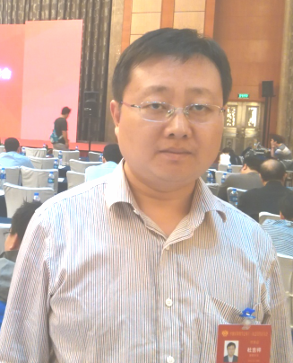
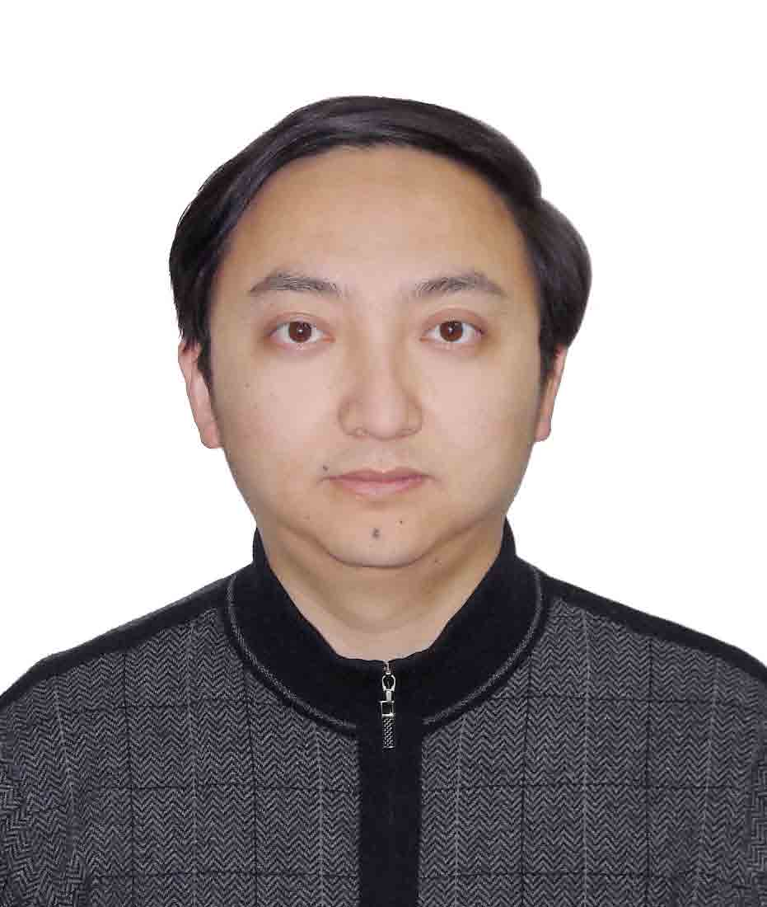

|
蔡绍滨，男，1973年出生，工学博士，教授，博士生导师，教育部新世纪优秀人才。 现任华侨大学计算机学院院长，中国计算机学会无线传感器网络专家委员会委员，省计算机学会理事，美国ACM会员。 《Ad Hoc Network》、《Computer Communications》， 《软件学报》和《计算机研究与发展》等期刊审稿人，国家自然科学基金，省自然科学基金和中小型企业创新基金评审人。 |
|
|  |
杜吉祥，男，1977年生，山东高唐人，工学博士，教授，博士研究生导师。 现任计算机科学与技术学院副院长， 计算机科学与技术学科计算机视觉与模式识别学科方向带头人， 厦门市计算机视觉与模式识别重点实验室副主任， 第十届校学术委员会委员 |
|  |
缑锦，1978年出生，华侨大学发展规划处副处长，计算机科学与技术学院教授、硕士研究生导师。 2006年作为浙江省优秀毕业生毕业于浙江大学计算机科学与技术专业并获得博士学位， 同年进入华侨大学任教，曾担任软件工程系系主任、计算机科学与技术学院院长助理等职务。 |

|
陈卫峰，男，现任计算机科学与技术学院党委书记。 |